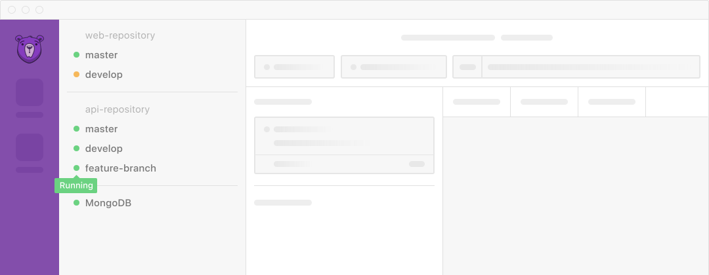
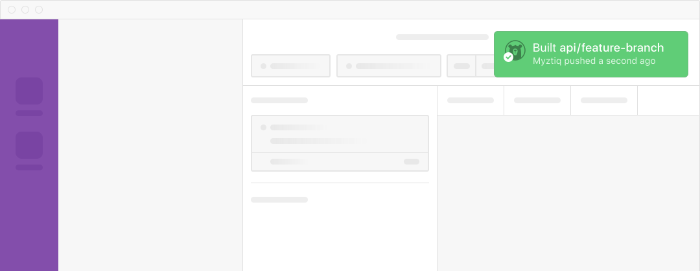

<article class="article article-github grid-container">
  <section class="section section-environments grid-block">
    <div class="grid-block text-block vertical justify-center">
      <h2 class="h2">Every branch across every repository runs in a full-stack environment.</h2>
    </div>
    <figure class="grid-block figure">
      
    </figure>
  </section>
  <section class="section section-updates grid-block">
    <div class="grid-block text-block vertical justify-center">
      <h2 class="h2">Updates to a branch automatically update the environment.</h2>
    </div>
    <figure class="grid-block figure gradient gradient-left">
      
    </figure>
  </section>
</article>
